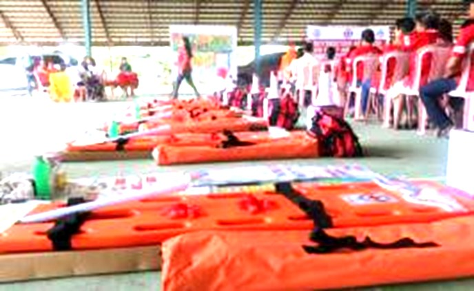
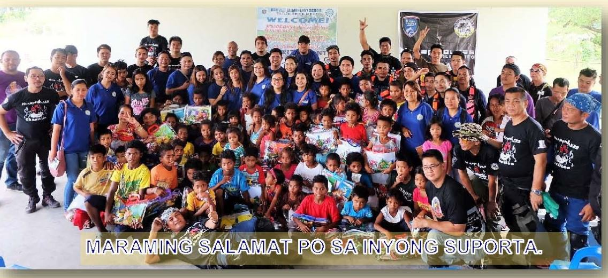
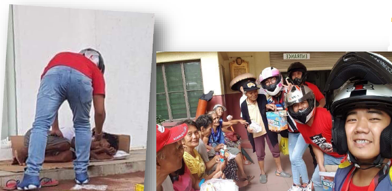

SBMA CHIEF BAGS 'JCI' PINAY POWER AWARD
By Randy Datu
SUBIC BAY FREEPORT — Subic Bay Metropolitan Authority (SBMA) Chairman and Administrator Wilma T. Eisma was named Pinay Power awardee for Central Luzon, besting nine other nominees to the competition organized by the Junior Chamber International (JCI) Philippines.
Ruth Devillena, JCI Olongapo vice president, disclosed that Eisma was nominated by JCI Olongapo in the business category for excelling in management and entrepreneurship.
“Her efforts provided economic development tothe community and helped others succeed in business,” Devillena said of Eisma’s nomination.
She added that out of 10 Pinay Power nominees in the Central Luzon region, Eisma emerged as the re-gional Pinay Power awar-dee. The others were nomi-nated for excellence in sports, academe, and community.
However, due to a prior commitment, Eisma was not able to attend the regional awarding ceremony for the Pinay Power Summit Awards held in Tarlac City last July 21 and JCI offi-cials presented her with the award here last Monday.
In accepting the award, Eisma cited his co-workers at the SBMA for helping build a culture of excellence and achievement in the Subic Bay Freeport.
“There’s no better time than now to say that we’re better and stronger together,” Eisma said.
“My achievements are their achievements, too, because I cannot do this job all by myself.”
“I am truly humbled and honored to receive this award that recognizes women. And I share this with the equally remarkable women and men of SBMA who have given me full support in all my endeavors,” she added.
The Pinay Power award, which was founded in 2013 by JCI Makati Princess Urduja chapter, is now a national project of JCI Phils. aimed at recog-nizing women who are com-mitted in the pursuit of women protection and com-munity development.
JCI Phils. is a non-profit organization of young active citizens ages 18 to 40 who are engaged and committed to creating im-pact in their communities, with the mission to provide development opportunities that empower young people to create positive change.
Eisma, who is a lawyer, was also adjudged a winner in last year’s search for the “100 Most Influential Fili-pina Women in the World,” which recognizes women of Philippine ancestry who are influencing the face of leadership in the global workplace.


Fishermen’s Forum Held in Sasmuan
by Phil. News Agency
SASMUAN, Pampanga, Aug.7-- About 100 fisherfolks and residents in Barangay Batang II attended a Stakeholders’ Forum of the Department of Environment and Natural Resources-Manila Bay Coordinating Office (DENR-MBCO) and partners from the national and local government.
“We are holding this activity to educate fisherfolks and residents with the Supreme Court Mandamus of restoring Manila Bay to its original seawaters that is fit for swimming, bathing and skin diving by proper rehabilitation of water channels,” DENR-MBCO Central Luzon Focal Person Cynde T. Pagador said.
“According to studies we conducted, Manila Bay is no longer safe for swimming because of its high coliform content obtained from both human and animal wastes,” Pagador added.
The forum featured dis-cussions from the Philip-pine Coast Guard on the registration of the locals’ vessels or Bangka under a Safety, Security and Envi-ronmental Numbering System.
Moreover, Bureau of Fisheries and Aquatic Resources (BFAR) gave an overview on existing laws, issuances and regulations concerning fishing active-ties.۩

178 Clark workers get P2.7-M in claims through mediation: DOLE
by Phil. News Agency
CLARK FREEPORT ZONE- At least 178 wor-kers from various locators here and nearby areas have received more than P2.71 million in monetary claims through the Single Entry Approach, the Department of Labor and Employment (DOLE) said.
Commonly known as SEnA, the Single Entry Approach is an inexpensive developmental mediation program of the DOLE that aims to speed-up resolution of labor disputes between workers and employers.
DOLE Regional Director Zenaida Angara-Campita said the presence of the labor agency’s satellite office at the Clark Freeport makes it easier and more accessible for workers here to seek assistance in resolving their labor issues with their employers.
“We are happy to report our SEnA scorecard this July as an important milestone as far as indus-trial mediation is concerned. The SEnA has been around for nearly 10 years and we have found great success in preventing various labor disputes materialize into full blown labor standard cases,” Campita said.
DOLE Clark Satellite Office (CSO) head Jose Roberto Navata said that they were able to resolve and settle 46 requests for assistance (RFAs) within an average of three days.
“We were able to handle quite a load of RFAs for July alone and we are thankful that we hit a 100-percent disposition rate where we were able to come up with win-win solutions for both management and workers in the least amount of time,” he said.
Labor and Employment officer Jerwin Bargas, for his part, said that the SEnA made it cost-effective for complainants availing of the DOLE’s assistance.
“But now, all they have to do is visit our office situated at the One Stop Shop Services for OFWs and file them there instead,” Bargas said. ۩
Subic firm turns over P250-K donation for Ayta students
SUBIC BAY FREEPORT — Networx Jetsports, a registered business locator in this free port, donated on Wednesday boxes of school supplies and brand new electric appliances for an Ayta community school in Barangay Cawag, Subic, Zambales.
Networx representative Manuel Sequeira said the donations were from the proceeds of the recent 2018 Jet Ski and Boat Charity Fun Run held at the Silangin Cove in San Antonio, Zambales, which drew nearly 400 foreign and local jet ski and boat enthusiasts aboard 83 jet skis and 30 boats.
Sequeira said the group was able to raise P250,000 cash and decided to donate the amount to the Ayta tribal community at Sitio San Martin in Cawag.
Assisted by community officers of the Subic Metropolitan Authority (SBMA), Networx formally turned over to the Cawag Resettlement Elementary School seven flat-screen television sets and 14 ceiling fans.
The group also gave away to the San Martin Ayta tribal leaders various school supplies for 34 kindergarten and elementary school pupils.
Meanwhile, SBMA Chairman and Administrator Wilma T. Eisma lauded Networx Jetsports for sho-wing “malasakit” to the indigenous people in Cawag, saying it was a good example that could be emulated by other business locators in the Subic Bay Freeport.
San Martin Ayta tribal members, headed by chief-tain Antonio Cabalic, ex-pressed gratitude to the do-nors during the turnover.
“Nagpapasalamat po kami sa Networx Jetsports para sa school supplies na ipinagkaloob nila sa amin. Napakalaking tulong po ang mga ito sa mga mag-aaral na Ayta na karamihan ay nahihirapang makabili ng kagamitan sa eskwela (We thank the Networx Jetsports for the school supplies they gave us. This is a big help to Ayta students, most of whom cannot afford to buy school supplies,” Cabalic said.
The Ayta tribal commu-nity at Sitio San Martini is about two kilometers away from the Cawag Resettle-ment Elementary School. Most of the students walk all the way to the school, as a one-way tricycle ride— the only mode of public transportation in the area— costs P27.
Cabalic said the educa-tional equipment and sup-plies donated by Networx would go a long way in raising the level of instructtion in the Ayta community school. (SBMA-MPD)>

CONGRATULATIONS. Elected president of Association of Barangay Chairmen (ABC) and Liga ng Mga Barangay (Zambales) Raedag “Totoy” Villamin (center) was sworn to office as new Board member of the Sangguniang Panlalawigan by Governor Amor Deloso (left). Witnessing the occasion were DILG-Zambales Dir. Armi Bactad (2nd left) and Raedag’s parents. (Photo: Randy V. Datu)
Lepto cases in CLuzon up 23%
by Philippine News Agency
CITY OF SAN FERNANDO, Pampanga — The Department of Health (DOH) Central Luzon Regional Office here has recorded 103 leptospirosis cases in the region from January 1 to July 28 this year, 23 percent higher than the 84 cases reported in the same period last year
Of the total cases, there were six recorded deaths in a span of seven months, lower than 13 in the similar period in 2017.
Dr. Jessie Fantone, head of the Regional Epide-miology Surveillance Unit (RESU) of the DOH-Central Luzon, advised residents of the region to avoid wading in floodwater.
“The general rule, our advisory is that any expo-sure to floodwater, whether big or small, is already a risk to leptospirosis,” Fantone said.
Out of the seven provin-ces in the region, Nueva Ecija has the most number of cases with 40; followed by Tarlac and Zambales with 18 cases each; Pampanga, 11; Bulacan, 10; Bataan, 4; and Aurora, 2.
He explained that lep-tospirosis is transmitted to humans through water that has been contaminated with the urine of animals like rats.
"Humans can be infected through open wounds or skin lesions or through the eyes. This rainy season, we are advising the public against wading in floodwaters.۩

EMERGENCY PREPAREDNESS TRAINING AND EQUIPMENT. The Philippine National Red Cross (PNRC) Zambales Chapter conducted rescue and first aid training to barangay and school emergency responders in the municipality of San Rafael, Zambales. Emergency and first aid equipment were distributed after the seminar. (Rasheed Kumar)



A ng motorsiklo at bisekleta ang pinakamalusog na paraan ng transportasyon. Maliban dito, ito rin ay komportableng paraan ng pamamasyal sa mga lugar na bihirang marating ng mga sasakyang may apat na gulong.
Sa isang pagkakataon, nagkasama-sama ang grupo ng Naked Wolves Charity, JP Morgan Foundation at Bataan Riders Club (BRC) upang mamasyal sa malayo ngunit napakagandang komunidad ng mga kapatid nating Ayta sa Zambales.
At upang sulitin ang mahabang biyahe, isinabay na rin ang paghahatid ng saya at pagmamahal sa mga kabataang Ayta na nag-aaral sa Baliwet Elementary School sa Sta Fe, San Marcelino, Zambales.
Ngunit higit ang kasiyahang nadama ng bawat rider at napawi ang pagod dulot ng mahabang biyahe. Ang maranig lamang ang tugong “Salamat po, Kuya!” sa bawat pag-abot ng karampot na pasalubong ay sapat na para lalo pa kaming magpursigi na ulitin ang gawaing ito.
Maraming salamat sa lahat ng tumulong sa proyektong ito, lalo na sa mga guro ng Baliwet Elem. Sch.
Ang Naked Wolves ay isang international motorcycle riders’ group na itinatag ni Arjun Shakar sa India. Karamihan sa mga kasapi ay gumagamit ng mga motorsiklong Kawasaki Rouser at Bajaj 200NS. Ang Naked Wolves ay isa sa mga pinakaaktibong motorcycle club sa Pilipinas na may 33 Kasapian o chapter sa buong bansa.۩
Photo credit: Francis Kabatit


Murang NFA rice, para sa mga dating taga-riles sa Marilao
Phil. Information Agency
>
LUNGSOD NG MALOLOS -Mismong ang National Food Authority (NFA) na ang naghatid at nagtinda ng mga bago, mabango at murang bigas sa bakuran ng mga dating nakatira sa riles ng tren sa Marilao.
Ito’y bahagi ng Tagpu-an Day-Rice Response De-livery ng ahensya bilang tugon sa direktiba ni Pangu-long Duterte na paigitingin ang pagtitinda ng mga murang bigas, lalo na sa mga mahihirap, habang mataas pa ang implasyon.
Ayon kay NFA Regio-nal Director Piolito C. Santos, ibinebenta nila ang naturang mga bigas ng P27. kada kilo.
Mas mababa ito sa kasa-lukuyang presyo ng mga bigas na komersiyal sa mga palengke na mula P42– P50 kada kilo.
Ang mga itinitinda ng NFA ay bahagi ng 250,000 metro toneladang bigas na inangkat sa Vietnam at Thailand.
Sa loob ng nasabing bilang, 120,000 na kaban ang inilaan ng NFA para sa suplayan ang Bulacan.
Kaugnay nito, isinusu-long ng NFA na maitaas ang presyo ng kanilang pagbili sa palay na naani sa Pilipinas.
Target nilang makabili ng mga lokal na palay mula 22 hanggang 24 piso kada kilo sa 2019. ۩
Kabataan, hinimok sa pagbabasa
ni RUBEN A. VELORIA
OLONGAPO CITY- Ipinagdiwang ang SM City Olongapo ang National Children’s Book Reading Day (NCBRD), isang taunang okasyon sa ilalim ng programa ng SM Cares for Children and Youth, kamakailan.
Grade 1 hanggang
NCBRD ay naglalayong ipalaganap ang literacy at hikayatin ang mga bata na hubugin ang kanilang pagkalibang sa pagbabasa sa murang edad pa lamang.
Sa nabanggit na okasyon, 50 mag-aaral mula sa Asinan Elementary School sa Olongapo City, mulaGrade 1 hanggang 4 ang binigyang pagkakataon na makapakinig ng mga kwento sa mga aklat na nilimbag ng Vibal and Anvil Publishings.
Ang mga bata ay nalibang sa mga kwentong binigyang buhay nina Maria Raquel Bustamante-Dela Torre ng 96.7 Klite FM Olongapo at Marie Elaine Gonzales, leasing manager ng SM Olongapo.
Naging masigla ang mga bata sa pakikinig sa mga kwento mula sa mga aklat at aktibong nakilahaok sa talakayan. Sa tulong ng mga tagapagkwento, napag-usapan ang mga mabubuting mensahe mula sa mga kwento, at hinikayat ang mga bata na maging mahilig sa pagbabasa.
Ang NCBRD ay ipi-nagdiriwang sa SM Super-malls upang iparanas sa mga bata ang sining ng pagbabasa sa pakikipagtulu-ngan ng Department of Education (DepEd), Anvil Publishing , Vibal Pub. at National Bookstore
Ang SM Olongapo at iba pang SM Supermalls sa buong bansa at sa China ang magkakasabay na nagdi-wang ng Book Reading Day katuwang ang mga partner na nagbahagi ng katulad na pagmamalasakit sa pagpa-paunlad ng literasiyasa murang edad.۩

Menor, 1 pa, arestado sa marijuana
ni Rasheed Kumar
BOTOLAN, ZAMBALES- Arestado ang isang menor de edad na lalaki at isang 18-anyos na kasama sa isinagawang buy bust operation ng pulisya nang nakraang Miyerkules sa Barangay New Taugtog bayang ito.
Nakilala ang mga suspek na sina Aero Pacheco, 18, at isang “Jaylord”, hindi tunay na pangalan, 16, pawang mga residente ng naturang lugar.
Nakumpiska sa mga suspek ang isang kaha ng sigarilyo na may nakatuping papel na naglalaman ng mga pinatuyong dahoon ng hinihinalang marijuana at P500 na ginamit bilang “drug buy bust money” ng Munda, Ampee Rivera, Rey Jay Turtoga, Ranillo Rarogal, Jevinal Secretaryo, Ramon Francisco at Roldan De Villar.
suspek na kanila nga ang mga nakumpiskang droga na ginagamit ngayong ebidensya ng pulisya para sa pagsasampa ng kaso.
Nahaharap sa kasong paglabag sa Section 26b o “attempt or conspiracy in selling illegal drugs” ng RA 9165 ang mga suspek.۩

KUSANG-LOOB GORDON HEIGHTS. Pinamunuan ni Barangay Chairman “Bossing” Echie Ponge ang mga residente na nagboluntaryong maglilinis sa mga kalsada ng barangay matapos ang naranasang pagbaha kung saan nag
-iwan ng makapal na putik, basura at mga bahagi ng punong kahoy. “Kusang-loob at boluntarismo ang kailangan ng bayan upang makaahod agad ito mula sa kalamidad,” pahayag ni Ponge. (Randy V. Datu
10 tiklo sa Bulacan drug buy-bust
by Philippine News Agency
CAMP ALEJO SANTOS, Bulacan- Sampung umano ay “tulak” ng ipinagbabawal na droga ang inaresto sa magkakahiwalay na buy-bust operations kamakailan kasunod ng pinaigting na kampanya ng Bulacan police laban sa iligal na droga.
Kinilala ni Senior Superintendent Chito G. Bersaluna, acting director ng Bulacan Provincial Police Office, ang mga inaresto bilang sina Jayson Landayan, Ariel Landayan, Doni Ivan Cruz, Iro Juneer Munda, Ampee Rivera, Rey Jay Turtoga, Ranillo Rarogal, Jevinal Secretaryo, Ramon Francisco at Roldan De Villar.
Sinabi pa ni Bersaluna na 36 piraso ng heat-sealed plastic sachet na naglalaman ng hinihinalang “shabu” at buy-bust money ang nabawi sa isinagawang operasyon ng pulisya salungsod ng San Jose del Monte (SJDM) at Meycauayan, at sa mga bayan ng Balagtas, Angat, Bustos, Pulilan, at Obando.
Sinabi pa na ang mga aresradong suspek at mga nakumpiskang ebidensya ay dinala na sa Bulacan Crime Laboratory Office para sa eksaminasyon.
3 patay, 21 arestado sa Bulacan
CAMP GEN. ALEJO S. SANTOS, Bulacan — Tatlong suspek ang napatay habang 21 iba pa ang naaresto ng Bulacan police sa isinagawang anti-criminality law enforcement operations kamaka-ilan ng Lunes at Martes.
Ayon kay Senior Supt. Chito Bersaluna, acting provincial director ng Bulacan Philippine National Police (PNP), ang mga nasawi ay sina Marcelino Peña; isang Michael; at alias Pilan na napatay sa anti-illegal drug operations na ginawa sa bayan ng Pandi, Bocaue at Meycauayan City.
“Nakipagbarian sila sa mga pulis makaraang mapansing mga operatiba ng pulis ang kanilang ka-transaksyon,” wika niya.
Nabawi mula sa mga suspek ang 21 small heat-sealed sachets ng suspected shabu (crystal meth); tatlong caliber .38 revolver; mga bala, live ammunition; at ang buy-bust money.
Sa 21 naaresto naman, sinabi ni Bersaluna na lima ay drug pushers- Eduardo Lugue; Roberto Mendoza; Jayson Bauzon; Regie Javier at Rhea Cabal, na nadakop sa buy-bust operations sa Malolos City, Hagonoy at Santa Maria.
Nadakip din ang Isang kawatan na may motorcycleang nasakote, isang swindler, 11 illegal gamblers at tatlong wanted persons.(PNA)
Water system sa Masinloc, tuloy na; PRRD, tutulong
ni RASHEED KUMAR
MASINLOC, Zambales– Tiniyak na higit na mapapadali ang pagsasa-ayos ng water system sa bayang ito makaraang kumpirmahin ni Presidential Spokeperson Harry Roque ang tulong mula sa Pangulo.
Ayon kay Mayor Arsenia Lim inaasikaso na nila ang pakikipag-usap sa mga ahensya ng pamaha-laan upang mapadali na ang proyekto.
Matatandaan na noong nakaraang Enero ibinalita ng Mayor Lim na nakipag-ugnayan sila sa Maynilad Water para sa pagpapaunlad ng suplay ng tubig sa nabnggit na bayan.
paglalagay ng tubo mula Coto Mines pababa sa kabayanan upang mabigyan ng tuloy-tuloy na suplay ng tubig ang buong bayan ng Masinloc.
Nagsagawa ng pagsusuri o feasibilty study ang grupo ng Maynilad at lumabas sa pag-aaral na maari nang umpishan ang proyekto.
Sa kasalukuyan, sinimulan na ang pagproseso ng mga dokumento at permit para sa proyekto.
Samantala, ilang mga proyekto pa ang naghihin-tay na lamang ng go signal kabilang ang isang reclama-tion project para pagtayuan ng mga negosyo.۩
Lumikas dahil sa baha, dalaga hinalay ng 3
RAMOS, Tarlac (Aug. 9)– Kasalukuyang tinutugis ang tatlong lalaki na umano’y humalay ng kapitbahay sa Barangay Pance, Ramos, Tarlac, kamakailan.
Inireklamo ng biktima, 19, sina Mark Winn Dela Cruz, 23; Justin Estremera, nasa hustong gulang, ng nasabing lugar; at Rommel Flores, 19, ng Bgy. Cariño, Paniqui, Tarlac.
Sa police report, nagtungo ang biktima sa bahay ng kanyang kaibigan sa kalapit nilang barangay upang bisitahin ang isang kaibigan nitong babae.
Inabutan ang biktima ng malakas na ulan at pagbaha sa bahay ng kaibigan kung saan naroon din noon ang mga suspek.
Dahil sa pagbaha, lumikas ang mga ito sa isang bahay sa mas mataas na lugar kung saan naganap ang insidente. (L. Alborote/BALITA)

Yamaha Mio 3 Club of the Philippines


They truly LOVE ZAMBALES
Mga Zambaleñong nag- ambag-ambag upang makapagbigay ng makakain sa ating mga kababayan ( mga bata at Homeless family ) na nasalanta ng nakalipas na pagbaha sa Subic at Olongapo.
Nakatutuwang pagmasdan na kahit sa kanilang munting tulong ay makikita SA mukha ng mga naabutan ang malalaking ngiti at kasiyahan.Ang kusang-loob na pagtulong at malasakit sa kapwa ay naganap katatapos lamang ng malawaang pagbaha sa Olongapo City at Subic.
Sa inyo na mga miyembro ng YM3CP Zambales Chapter, kami ay lubos na humahanga sa inyong taglay na kabutihang puso.
Pasasalamat:
Larawan: Raven Canonizado
Teksto: Ar-jay Calimlim Magpantay>


Editorial
Treat to school children
There is a national event that we do not celebrate at school, but students , especially those in the kindergarten and elementary level, should be aware of. It is a celebration only the SM Supermall, nationwide, observe and have fun of it with the kids.
This national event is the National Children’s Book Reading Day or NCBRD, celebrated annually under the initiative of the SM Cares for Children and Youth, a corporate social responsibility (CSR) arm of the SM Prime Holdings, Inc.Mbr>
The NCBRD aims to spread the literacy among the kids at their early age and to encourage them to love and enjoy reading books of their interests. During the event, selected students from public schools are “treated” with the opportunity to various activities that are related to improving skills in reading, listening and getting new friends.
In Olongapo City, about 50 students from Asinan Elementary School (Grade 1 to Grade 4) and their teachers were selected to join the celebration in SM City Olongapo mall. The young kids were told stories about fantasy and comic heroes brought to life by invited storytellers from books published by Vibal and Anvil Publishings. Thanks to Maria Raquel Bustamante-Dela Torre of a local radio here and Marie Elaine Gonzales, the leasing manager of SM Olongapo.
The kids did not only enjoy the stories, nor they only learned the good moral values relayed by each story told, but they also understand how interesting it is to read books and what are the many things you could discover in reading books.
Good books are important in the development of education system in the Philippines. Not to mention that many of the books distributed to students in the public schools are almost dilapidated with pages torn, if not missing. It is time that the government, through its education arm the Dep Ed, should address the lack of books in the school.
The program of SM is a model to the business sector in the country on how they could help improve the reading skills of many school children in the country. Let this program continue to grow, and hopefully, in the next year will include students in the countryside.

S a panahon ngayon na napakarami nang nagkakasakit ng diabetes ay mahalaga na maunawaan natin kung paano ito maiiwasan, at malaman kung ano-ano ang mga tamang pagkain na makakatulong upang tayo ay maging ligtas sa sakit na diabetes.
Ayon sa RiteMed.com.ph, Ang diabetes mellitus ay isang karamdaman kung saan ang katawan ay hindi makalikha ng sapat na insulin o kaya ay hindi makaresponde nang maayos dito. Ang insulin ay ang hormone na naglilipat ng asukal mula sa dugo papunta sa iba’t-ibang cells upang gawing enerhiya ng katawan. Ang sintomas ng diabetes ay hindi madaling mahalata dahil kadalasan ang mga ito ay napagkakamalang pangkaraniwang kondisyon.
Sa lathalain na sinipi mula sa Kalusugan.Ph na mababasa sa internet, ibinahagi nito ang mahahalagang payo para tayo ay makaiwas sa sakit na diabetes. Basahin po natin:
10 TIPS SA PANGANGALAGA SA KALUSUGAN NG MAY DIABETES
Ang pagkontrol sa mga pagkain na kinakain sa araw-araw na sinasabayan pa ng regular at tamang pag-eehersisyo at pag-inom ng mga gamot ang pinakaepektibong paraan ng pangangalaga at [pagpapanatili] sa kalusugan ng taong may sakit na diabetes. Ito ay upang maiwasan ang mga komplikasyon na dulot ng sakit. Ang sumusunod na mga tip ay makatutulong sa pagpapanatili ng kalusugan ng taong may diabetes.
1. Kumain lagi nang regular sa oras. Ang sobrang pagtaas o sobrang pagbaba ng lebel ng asukal sa dugo na karaniwang nararanasan kung may sakit na diabetes ay maaaring maiwasan kung kakain nang regular sa oras. Halimbawa, ang oras ng almusal ay panatilihing nakapako sa 7:00 NU bawat araw, ang tanghalian ay sa 12:00 NN, at ang pagkain sa hapunan ay 7:00 NH sa bawat araw.
2. Palitan ang mga simpleng carbohydrates ng mga komplikadong carbohydrates. Ang mga pagkaing gaya ng asukal, kanin, at tinapay, ay maiging mapalitan ng mga may komplikadong uri ng carbohydrates gaya ng oats, pasta, whole-grain na tinapay, kamote, at mais, upang maiwasan ang mabilis na pagtaas ng lebel ng asukal sa dugo.
3. Bawasan ang dami ng carbohydrates na kinakain. Ang carbohydrates ay isang komplikadong uri ng asukal. Bawasan ang dami ng kinakain na carbohydrates sa bawat araw. Bigyang pansin ang iba pang pagkain gaya ng mga gulay, puti ng itlog, at
mga karne.
4. Dagdagan ng protina, fiber at omega 3 fats ang mga kinakain. Ang binabawas na carbohydrates ay dapat palitan ng mayaman sa protina (manok, isda, puti ng itlog, gatas), fiber (gulay at prutas) at omega 3 fats (isda at mga mani). Ang mga ito ay nakatutulong na pabilisin ang metabolismo at mabawasan ang taba sa katawan, na nagreresulta naman sa mas mabilis na pagkontrol sa lebel ng asukal sa katawan.
5. Mag-ehersisyo araw-araw. Ang pagkontrol sa mga kinakain ay maiging masabayan ng regular na pag-eehersisyo. Ang paglalakad nang 45 minuto sa bawat araw ay sapat na para mamentena ang lebel ng asukal sa dugo, at mabawasan ang mga taba sa katawan.
6. Regular na pagbabantay sa dami ng asukal sa mga kinakain. Mahalaga na mabantayan nang husto ang dami ng asukal na pinapasok sa katawan. Alamin at bilangin kung gaano karami ang taglay na asukal ng bawat pagkaing kinakain.
Court stops suspension order vs. Olongapo Mayor, 15 others
OLONGAPO CITY (Aug. 7)- The Department of the Interior and Local Government (DILG) on Tuesday was stopped from serving the notice of suspension order on City Mayor Rolen Paulino and 15 other local officials here.
This developed as Quezon City Regional Trial Court (RTC) Branch 83 presiding judge Ralph Lee ordered a status quo and asked both petitioners and respondents to submit their respective memo-randum within 15 days in support of their respective argument.
The Ombudsman earlier ordered the DILG to serve the six-month suspension to the 16 Olo-ngapo officials over an alleged irregularity in the awarding of a 25-year lease contract to SM Prime Holdings, Inc. (SMPHI).
The RTC judge said after the time given, it will decide on whether or not to issue a temporary restraining order (TRO), with or without the memorandum.
Paulino, along with Vice Mayor Aquilino Cortez, Jr.; Councilors Noel Atienza, Linus Bacay, Benjamin Cajudo II, Edna Elane, Eduardo Guerrero, Alreuela Bundang-Ortiz; former coun-cilor Ellen Dabu; Asso-ciation of Barangay Captains (ABC) president Randy Sionzon; Indige-nous Peoples (IP) repre-sentative Egmedio Gon-zales Jr., as well as city administrator Mamerto Malabute; city planning chief Tony-Kar Balde; city accountant Cristiflor Buduhan; city legal head Ana Florentino Sison; and city budget chief Joy Fernandez Cahilig, have petitioned the court for the issuance of a TRO to prevent the DILG from serving the notice of suspension.
The court also ordered both parties to refrain from undertaking any action during the period that will render the issue before the court moot and academic.
Paulino has earlier said that the Ombudsman’s decision to suspend them for six months over a simple misconduct was unfair.
“While we respect the rule of law, we will not step down until our appeal has been decided by the CA,” the two-termer mayor said.
In relation to the city government’s lease of land to SMPHI, Paulino claimed the heavy punishment over a minor procedural lapse was unjust.
“Such offense normally merits a penalty of a mere reprimand to one month suspension at the most," the mayor said. “Why impose six months suspension on us?” he asked.
Paulino pointed out that all the original charges filed against them have been dismissed by the Ombudsman.
He appealed to the authorities to respect their decision as they want to wait for the CA's decision on their appeal.
"We believe the decision to suspend us for six months was unfair but if the CA says otherwise, then we will follow, but not until the court rules on the TRO," he said.
The supporters of the mayor gathered in front of the city hall on Monday after word spread that the DILG would serve the notice of suspension.
Others even placed three coffins in front of the city hall, which Paulino's followers said symbolized the death of democracy in Olongapo. ۩
3 utas,13 aresado sa buy-bust
ni LIGHT NOLASCO/ BALITA
NUEVA ECIJA (Aug. 7) – Tatlo ang nasawi habang 13 ang naaresto sa magkakahiwalay na anti-illegal drugs operation sa Nueva Ecija, sa nakalipas na 72 oras.
Sa report na ipinadala kay Senior Supt. Eliseo Tanding, Nueva Ecija Police director, ang mga nasawi ay sina Melvin Santos, ng Barangay La Torre, Talavera; Kenneth Corpuz, ng Dicarma, Caba-natuan City; at Leonardo Milan, 41, ng Bgy. Uma-ngan, Aliaga, pawang sa lalawigang ito.
Ang unang dalawang napatay ay nakipagbarilan umano sa mga pulis nang makahalatang operatiba ng pulisya ang katransaksyon.
Nanlaban umano sa pulis si Milan, sa isang checkpoint sa San Mariano, San Antonio ng nabanggit na lalawigan.
Ayon kay Chief Insp. Marlon Cudal, hepe ng San Antonio police, sangkot si Milan sa robbery hold-up activities sa Aliaga, Nueva Ecija at drug surrenderer noong 2016.
Kabilang naman sa mga naaresto sina Erwin Reva-muntan, 51, ng Bgy. Poblacion West; Casiano Agustin III, 34, ng Calaocan District, kapwa taga-Rizal; at Maximo Mallari, 51, ng Bgy. Palomaria, Bongabon.
Ricardo Caguiat, 65, ng Bgy. 201, 3018 Abucay St., Tondo, Maynila na nakuhanan ng apat na pakete ng shabu.
Kabilang din sina Ronnie Obligasyon, 47, ng San Leonardo; Efren de Fiesta, 35, ng Bgy. Villa Flores, Cuyapo; Jayson Carvajal Villacorta, 39, ng Bgy. San Juan Aliaga; Roberto Pingol Magno, 35, ng Bgy. San Roque, San Isidro. Dinakip din sa Purok 2, Bgy. Imelda sina Rodolfo Padilla Iniego, Jr., 21; Roberto Nuque Cincepcion, 38; Wilson Villanueva dela Cruz, 18, kapwa taga- Bgy. MS Garcia; Eric Vitoriolo, 41; at Leonora dela Cruz Mallari, 54, Bgy. Imelda, Cabanatuan City.۩
3 biktima ng EJK, nahukay sa paanan ng tulay sa Zambales
ni Randy V.Datu
SAN FELIPE, ZAMBALES- Tatlong bangkay ang nadiskubre ng pulisya na nakalibing sa iisang hukay malapit sa tulay ng Barangay Maculcol., San Felipe noong Huwebes ng umaga.
Kinilala ni Zambales Provincial Police director Senior Supt. Cosme Abre-nica ang mga biktima bilang sina Norman Montevirgen, 64, Population Commission head ng Zambales, residente ng Barangay Pagatpat, Sta. Cruz, Zambales; Darel Oli-pane, 18, ng Purok 3, Bgy. Amungan, Iba, Zambales; at Gerald Laborce, 24, ng San Agustin, Iba, Zambales.
Sina Olipane at Labor-ce ay iniulat na nawawala simula pa noong Hulyo 21 ng Iba Police Station.
Unang sinabi ni Police Inspector Cla Devara, San Felipe PNP Officer-in-charge, na walang pagkaka-kilanlan sa mga biktima ngunit sinabing ang unang biktima ay nakasuot ng itim na t-shirt at itim ng short; ang pangalawa ay nakasuot ng blue long sleeve at beige jersy short; samantalang ang pangtlo ay nakasuot ng long sleeve shirt striped na may blue color, belt na may scorpion logo at black six-pocket short pants.
Ang mga ulo at mukha ng biktima at nabalutan ng packaing tape, ganun ang mga kamay ay natinalian ng tape. Walang nakitang bakas ng dugo sa katawan ng mga biktima na palatandaan na ang mga ito ay binaril o sinaksak na ikamamatay ng mga ito.
Ayon sa ulat, dakong ika-7:50 ng umaga, habang nagpapastol ng kanyang alagang baka, nakita ng isang residente na naghu-hukay ang kanyang aso sa isang panig malapit sa tulay ng Maculcol. Nang kanyang suriin ay nakita ang bangkay ng tao na kalahating naka-baon. Kanya itong iniulat sa pulisya.
Nang maiahon ng pulis-ya ang unang bangkay ay nadiskubre pa ang dala-wang magkapatong na bangkay sa naturang hukay.
Dinala ang bangkay sa Roma Funeral Homes para sa isasagawang awtopsiya at para sa pagkakaki-lanlanan ng mga ito.
Samantala, sinabi ni Abrenica na patuloy ang isinasagawang imbestigas-yon sa kaso upang makakalap ng impormasyon para sa pagkakakilanlan ng mga suspek sa krimen.۩

SM City Olongapo assistant mall manager Ana Lorraine Azucena habang namamahagi ng mga school kits, aklat at lapis (kaloob ng National Bookstore) sa mga mag-aaral ng Asinan Elem. Sch. sa ginanap na National Children’s Book Reading Day (NCBRD) kamakailan. –(Ibinahaging larawan)
Baby patay sa sunog
CABANATUAN CITY (Aug. 7)– Isang sanggol na lalaki ang nasawi habang anim na iba pa ang sugatan nang matupok ang kanilang bahay sa Barangay Caali-bangbangan, Cabanatuan City, kamakailan.
Kinilala ang nasawi na si Arwin Xian Legaspi, 1 taong gulang, ng Sitio Boundary, ng nabanggit na barangay.
Sa imbestigasyon, naga-nap ang sunog sa nasabing lugar dakong 1:50 ng madaling araw.
Kabilang sa nasugatan si Ariel Legaspi, 52; at live-in partner na si Clarissa Gamillam 40; at mga anak na sina Bryan, Justina at Angelica; at inang si Jovita Gamillam, 64.
Umabot sa ikalawang alarma ang sunog bago naapula ng mga bumbero.-LIGHT A. NOLASCO